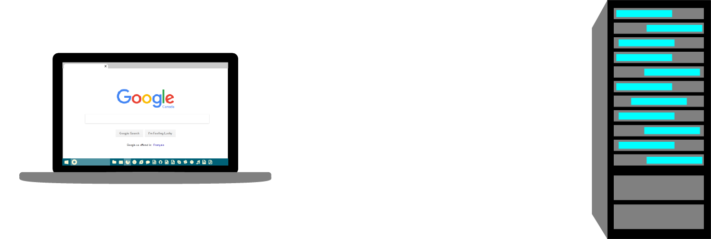

Hyper-Text Transfer Protocols
Client
- Local
- Web Browser
- HTML
- CSS
- SASS
- Javascript
- Images
- Fonts
- Etc.
Request

Response
Server
- Remote
- LAMP stack
- Linux
- Apache
- MySQL or MariaDB
- PHP or Python
The Request/Response Process
- The client sends a request to the server.
- In response, the server processes a server-side language like PHP, Python or Ruby on the back end and returns HTML, CSS and JavaScript code to display a web page on the front end.
XAMPP
- XAMPP is a collection of software which allows us to run server and database software in our local environment
- XAMPP stands for X (your operating system), Apache, MySQL/MariaDB, PHP
- This forms what is known as your development "stack"
- The LAMP Stack
- The traditional "stack" which is used by developers is known as the LAMP stack
- The LAMP Stack constists of:
- Linux is used on servers but XAMPP allows us to use Windows or Mac OS as well
- Apache is the server software
- MySQL or MariaDB which are database software
- PHP is our back-end scripting language
- If an employer asks for LAMP developers or asks you what "your stack" is, this is what they are referring to
- The second "P" in XAMPP actually stands for Perl, but we won't be using that
- Python developers also call their stack a LAMP stack
- Other stacks include the LAMR stack (Ruby developers) and the MEAN stack (NodeJS developers)
- Download XAMPP at the Apache Friends website (they'll be there for you!)
- Once you have XAMPP installed turn on Apache and MySQL/MariaDB
- Remember to save all projects which use technologies that are dependant on server software such as PHP and AJAX in C:/xampp/htdocs so that the server can find them, unless you have set up a virtual host (ask Tim about this in the lab)